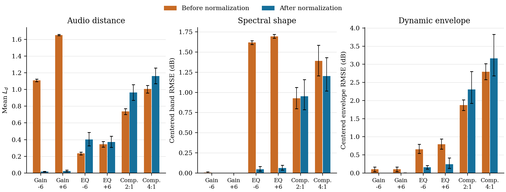

Post-hoc FX Registration and Rendered Verification for Audio Effect Transfer
Galaxy Audio Effect Team, Tencent Music Entertainment
We attach a lightweight registration head to a frozen audio-effect representation, propose a finite set of executable FX settings, and select among their rendered outputs. This avoids query-time parameter optimization while retaining audio-based verification.
CounterFX-200 Benchmark
Two adjacent, non-overlapping windows are taken from the same track. The same hidden FX chain is applied to both windows. The system receives the source A without the added chain and processed reference Bref; the processed source Atarget is withheld and used as an exact same-content evaluation target.
CounterFX-200 protocol and configuration
The frozen test set contains 200 license-filtered FMA-small test excerpts. Each provides two adjacent 10-s windows at 44.1 kHz, independently normalized to −20 LUFS. Target chains contain 1–4 of eight effects, with 22 variable controls and four order templates. Targets use Pedalboard 0.9.23 with no output limiter or loudness matching.
The protocol specifies source screening, effect-selection probabilities, order templates, parameter ranges, and linear or log-uniform sampling. Target parameters are redrawn for clipping or insufficient processing change: both source–target distances must satisfy Ld ≥ 0.8. The released manifest fixes the accepted targets; it is evaluation metadata, not model input.
Known topology supplies effect identities and order but not controls; hidden topology supplies neither. Shared random pools isolate representation ranking, whereas encoder-specific head-centered pools evaluate complete systems. Oracle error describes candidate coverage; the selected–oracle gap describes ranking error within a pool.
Audio Examples
Representative known- and hidden-topology examples from CounterFX-200. Each example occupies one row. Lower Ld indicates a closer match to the exact target. Only one recording plays at a time.
Supplementary Results
Candidate budget
Learned proposals are most useful at small budgets. With known topology, RelativeFx Head@16 obtains Ld = 0.769, compared with 0.770 for Random@512, using 32× fewer candidates.

Cross-representation comparison
The same post-hoc registration protocol is applied to three frozen representations. Values are selected mean Ld on CounterFX-200; FX-set F1 ignores effect order and parameters.
| Frozen representation | Known Ld ↓ | Hidden Ld ↓ | Hidden FX-set F1 ↑ | |||
|---|---|---|---|---|---|---|
| Head@16 | Head@512 | Head@16 | Head@512 | Head@16 | Head@512 | |
| RelativeFx | 0.769 | 0.708 | 0.888 | 0.865 | 0.701 | 0.725 |
| Fx-Encoder++ | 0.915 | 0.836 | 1.154 | 1.076 | 0.628 | 0.654 |
| AFx-Rep | 1.132 | 0.985 | 1.442 | 1.304 | 0.678 | 0.736 |
Proposal coverage and verifier gap
Oracle error is the best waveform match already present in a candidate pool. The selected-oracle gap therefore measures how much performance remains in candidate ranking after proposal generation.
| Representation | Topology | Head@16 | Head@512 | ||||
|---|---|---|---|---|---|---|---|
| Selected | Oracle | Gap | Selected | Oracle | Gap | ||
| RelativeFx | Known | 0.769 | 0.673 | 0.096 | 0.708 | 0.510 | 0.197 |
| Fx-Encoder++ | Known | 0.915 | 0.764 | 0.151 | 0.836 | 0.556 | 0.281 |
| AFx-Rep | Known | 1.132 | 0.791 | 0.341 | 0.985 | 0.548 | 0.437 |
| RelativeFx | Hidden | 0.888 | 0.710 | 0.179 | 0.865 | 0.552 | 0.313 |
| Fx-Encoder++ | Hidden | 1.154 | 0.881 | 0.273 | 1.076 | 0.643 | 0.433 |
| AFx-Rep | Hidden | 1.442 | 0.941 | 0.500 | 1.304 | 0.625 | 0.678 |
Optimization budget and audio match
In hidden-topology CMA-ES, the verifier cosine objective continues to improve with more calls, while output error is lowest at 2,048 calls. This difference motivates reporting waveform-level matching rather than the search objective alone.
| Renderer calls | 128 | 512 | 1,024 | 2,048 | 4,096 |
|---|---|---|---|---|---|
| Mean Ld ↓ | 1.088 | 0.955 | 0.932 | 0.918 | 0.933 |
| Cosine objective ↑ | 0.925 | 0.957 | 0.965 | 0.971 | 0.974 |
Matched runtime
Median end-to-end query time for 10-second audio, including proposal, rendering, candidate encoding, and selection. All GPU measurements use one NVIDIA L20. CPU and GPU use different renderer implementations and are not intended as a direct hardware comparison.
| Method | Calls | GPU time (s) | CPU time (s) | ||
|---|---|---|---|---|---|
| Known | Hidden | Known | Hidden | ||
| Direct head | 1 | 0.121 | 0.137 | 0.224 | 0.236 |
| Head@16 | 16 | 0.846 | 1.753 | 3.124 | 3.145 |
| Head@512 | 512 | 22.584 | 33.382 | 111.088 | 108.328 |
| Random@512 | 512 | 23.127 | 42.998 | — | — |
| CMA-ES@512 | 512 | 22.627 | 38.688 | — | — |
Perceptual evaluation
Twenty-eight listeners provided 672 five-point ratings. Subjective similarity correlates with negative Ld at Spearman ρ = 0.429 (95% CI [0.328, 0.525]). Excluding source and target controls gives ρ = 0.357 over 479 system ratings (95% CI [0.255, 0.452]). Intervals use listener-level bootstrap. The table reports unadjusted pooled means under incomplete-block assignment, not paired estimates of method differences.
| Condition | Mean score ↑ | Ratings |
|---|---|---|
| Exact target | 4.01 | 96 |
| Head@512 | 3.57 | 93 |
| Head@16 | 3.47 | 89 |
| CMA-ES@512 | 3.39 | 98 |
| Random@512 | 3.38 | 100 |
| Head center | 3.30 | 99 |
| Source | 2.32 | 97 |
Effect-Normalization Diagnostic
Does Fx-Normalization map different processing histories to a common state? This separate diagnostic uses 100 ten-second clips from 49 songs in the MUSDB18-HQ test split, with 25 clips each of bass, drums, vocals, and other. Clips were screened for activity and clipping before normalization, without using the eventual results.
For each source x, we apply an intervention F and compare F(x) with x before normalization, then compare N(F(x)) with N(x) after normalization. Here N is the released Fx-Normalization pipeline. Both signals have the same musical content; x is not assumed to be dry or effect-neutral. This is not a CounterFX-200 subset.
| Intervention | Before Ld | After Ld | After 95% CI | After Ld, loudness matched |
|---|---|---|---|---|
| Gain -6 dB | 1.109 | 0.018 | [0.015, 0.021] | 0.018 |
| Gain +6 dB | 1.652 | 0.025 | [0.016, 0.037] | 0.020 |
| Peak EQ -6 dB | 0.234 | 0.402 | [0.325, 0.486] | 0.397 |
| Peak EQ +6 dB | 0.345 | 0.372 | [0.309, 0.442] | 0.367 |
| Compression 2:1 | 0.737 | 0.963 | [0.870, 1.056] | 0.929 |
| Compression 4:1 | 1.005 | 1.162 | [1.070, 1.256] | 1.109 |
Ld is the paper's three-resolution STFT audio distance, not an embedding distance. The last column is a secondary analysis after matching loudness. All 95% intervals below use 10,000 song-cluster bootstrap resamples, keeping clips from the same song together.
Gain differences are largely removed. EQ differences also decrease in spectral shape, although nonzero audio distance remains. Compression-induced differences persist in both the audio distance and dynamic envelope. The diagnostic therefore does not justify treating normalized audio as a guaranteed common neutral state. It does not invalidate existing rendered triplet targets.
Acoustic features and stem breakdown

| Intervention | Spectral shape, before | Spectral shape, after | Dynamic envelope, before | Dynamic envelope, after |
|---|---|---|---|---|
| Gain -6 dB | 0.004 | 1.15e-04 | 0.102 | 2.65e-04 |
| Gain +6 dB | 6.23e-06 | 1.44e-04 | 0.102 | 0.002 |
| Peak EQ -6 dB | 1.618 | 0.046 | 0.656 | 0.156 |
| Peak EQ +6 dB | 1.695 | 0.063 | 0.790 | 0.245 |
| Compression 2:1 | 0.925 | 0.953 | 1.876 | 2.308 |
| Compression 4:1 | 1.389 | 1.203 | 2.796 | 3.161 |
| Intervention | Bass | Drums | Vocals | Other |
|---|---|---|---|---|
| Gain -6 dB | 0.045 | 0.006 | 0.007 | 0.014 |
| Gain +6 dB | 0.052 | 0.006 | 0.007 | 0.034 |
| Peak EQ -6 dB | 0.498 | 0.306 | 0.472 | 0.331 |
| Peak EQ +6 dB | 0.534 | 0.234 | 0.310 | 0.412 |
| Compression 2:1 | 1.137 | 1.125 | 0.686 | 0.904 |
| Compression 4:1 | 1.206 | 1.423 | 0.903 | 1.114 |
Three frozen representations
These tables report cosine distance using each encoder's native input protocol. Fx-Encoder++ and AFx-Rep compare the embeddings of the baseline and its processed version. RelFx compares the baseline-to-version relation with the baseline-to-itself relation. After normalization, the baseline is N(x). Distances are not directly comparable across encoders.
RelFx
| Intervention | Before mean | After mean | After median | After 95% CI |
|---|---|---|---|---|
| Gain -6 dB | 0.133 | 1.70e-06 | 0 | [≈0, 3.29e-06] |
| Gain +6 dB | 0.222 | 1.31e-04 | ≈0 | [≈0, 4.06e-04] |
| Peak EQ -6 dB | 0.078 | 0.008 | 2.43e-04 | [0.004, 0.013] |
| Peak EQ +6 dB | 0.087 | 0.006 | 2.09e-04 | [0.003, 0.010] |
| Compression 2:1 | 0.133 | 0.062 | 0.050 | [0.053, 0.071] |
| Compression 4:1 | 0.192 | 0.093 | 0.084 | [0.080, 0.106] |
Fx-Encoder++
| Intervention | Before mean | After mean | After median | After 95% CI |
|---|---|---|---|---|
| Gain -6 dB | 0.024 | ≈0 | ≈0 | [≈0, 1.35e-06] |
| Gain +6 dB | 0.035 | 6.16e-05 | ≈0 | [≈0, 1.89e-04] |
| Peak EQ -6 dB | 0.013 | 0.021 | 1.46e-04 | [0.010, 0.033] |
| Peak EQ +6 dB | 0.020 | 0.019 | 1.58e-04 | [0.008, 0.033] |
| Compression 2:1 | 0.024 | 0.070 | 0.020 | [0.053, 0.087] |
| Compression 4:1 | 0.048 | 0.091 | 0.038 | [0.072, 0.111] |
AFx-Rep
| Intervention | Before mean | After mean | After median | After 95% CI |
|---|---|---|---|---|
| Gain -6 dB | ≈0 | 1.11e-05 | 2.18e-06 | [6.05e-06, 1.85e-05] |
| Gain +6 dB | ≈0 | 1.51e-05 | 2.38e-06 | [8.48e-06, 2.33e-05] |
| Peak EQ -6 dB | 0.058 | 0.001 | 3.47e-04 | [5.90e-04, 0.002] |
| Peak EQ +6 dB | 0.057 | 0.001 | 3.51e-04 | [7.63e-04, 0.002] |
| Compression 2:1 | 0.069 | 0.085 | 0.056 | [0.072, 0.099] |
| Compression 4:1 | 0.143 | 0.157 | 0.121 | [0.135, 0.180] |
Compression retains nonzero distances in all three representations. EQ means and medians can differ substantially, especially for Fx-Encoder++; the median and per-item data are included to expose this variation. AFx-Rep's amplitude-normalizing preprocessing makes its gain distances near zero even before Fx-Normalization. Values with magnitude below 10−6 are shown as ≈0; tiny negative cosine distances are numerical noise.
Repeat controls and clipping sensitivity
Independent identity repeats, one per stem type, give mean Ld = 0 over 4 clips. The main results retain all selected clips, including cases with clipping during normalization. The sensitivity analysis excludes a pair if either signal clips at any normalization stage; no replacement clips are selected. Compression residuals remain in the unclipped subsets.
| Intervention | Unclipped n | Unclipped after Ld | 95% CI | After minus before Ld, all clips | Paired 95% CI |
|---|---|---|---|---|---|
| Gain -6 dB | 97 | 0.018 | [0.015, 0.021] | -1.091 | [-1.107, -1.074] |
| Gain +6 dB | 97 | 0.019 | [0.015, 0.025] | -1.627 | [-1.640, -1.612] |
| Peak EQ -6 dB | 97 | 0.401 | [0.323, 0.486] | 0.168 | [0.090, 0.252] |
| Peak EQ +6 dB | 97 | 0.370 | [0.305, 0.442] | 0.028 | [-0.043, 0.103] |
| Compression 2:1 | 97 | 0.953 | [0.861, 1.048] | 0.226 | [0.120, 0.334] |
| Compression 4:1 | 96 | 1.161 | [1.069, 1.257] | 0.157 | [0.057, 0.263] |
Paired changes describe the mean, not every clip. Residual-distance intervals are not equivalence tests and do not set a perceptual threshold for neutrality.
Data selection and reproducibility
Sources are stereo, 44.1-kHz stems from MUSDB18-HQ. Selection uses one active 10-s window per song/stem, with fixed thresholds and seed 20260910. Each full stem receives common peak-only attenuation to at most −12 dBFS before its intervention variants are created. EQ uses 1 kHz and Q = 0.707; compression uses 10-ms attack, 100-ms release, and a source-derived threshold shared by both ratios.
The official pipeline processes full stems through EQ, compression, panning, and loudness normalization, without reverb augmentation. Identical windows are cropped only afterward. The released MUSDB18 normalization statistics and all encoder weights are fixed; no models are trained in this diagnostic. Their hashes, software versions, selection rules, parameter values, and metric definitions are in the linked protocol and manifest. The exact song split used to create the released normalization statistics was not independently verified.
Downloads contain measurements and metadata only, not MUSDB18-HQ audio or model weights. This controlled diagnostic tests the normalization assumption for these interventions, not every possible effect or an encoder leaderboard.
Additional observations
- Proposal and verification are distinct bottlenecks. Oracle curves improve steadily with budget, while selected curves flatten earlier.
- Audio matching does not require exact chain recovery. RelativeFx Head@512 reaches hidden-topology FX-set F1 = 0.725, while exact chain recovery is 14.0%.
- The output metric has perceptual support. Across 28 listeners and 672 five-point ratings, system-only scores correlate with negative Ld at Spearman ρ = 0.357.